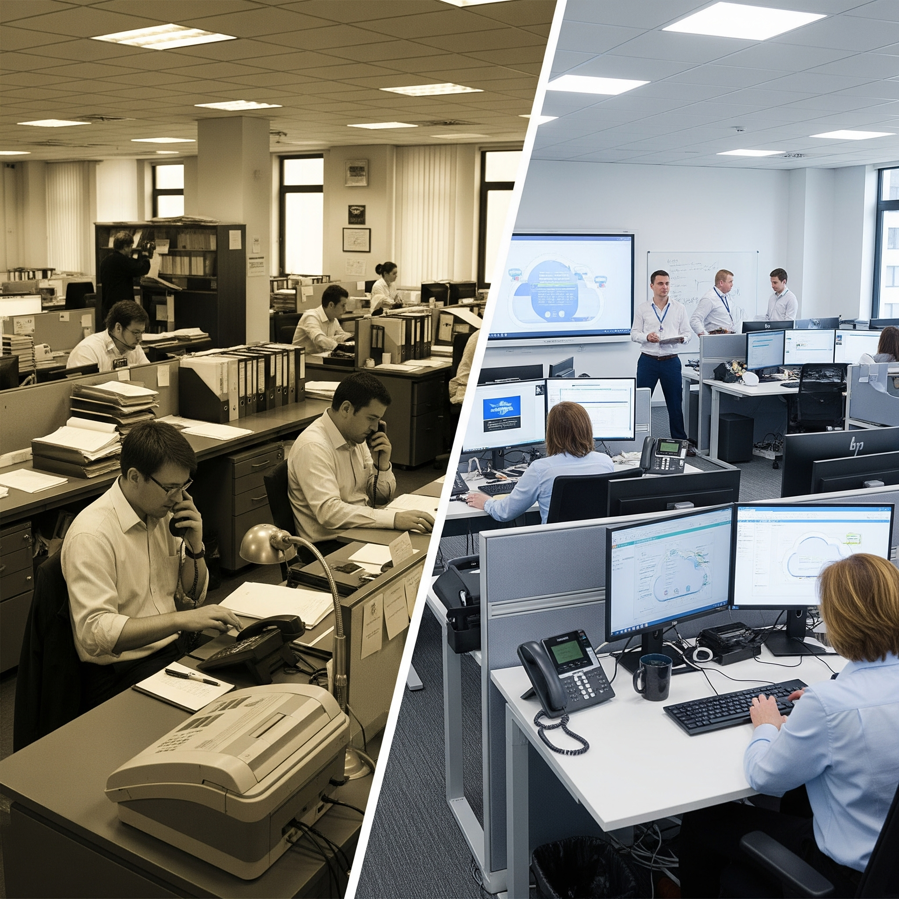
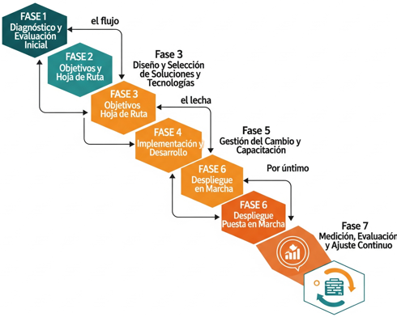

Descargar estos apuntes
Índice
Objetivo de la Unidad
La Unidad 5, "Planes de transformación", busca capacitar al alumnado para crear un plan de transformación para una empresa clásica, llevándola de una economía lineal a un modelo de "Empresa 4.0". Este proceso implica identificar los cambios necesarios en las fases principales del sistema productivo o de servicios y analizar cómo afectan a los recursos humanos. El objetivo es desarrollar una comprensión práctica de cómo las empresas deben adaptarse a la era digital para mantenerse relevantes y competitivas.
La digitalización es ahora una necesidad para la supervivencia y el crecimiento empresarial. La "Cuarta Revolución Industrial" ha redefinido los modelos de negocio, procesos y expectativas del cliente con tecnologías como IoT, Big Data, IA y la computación en la nube. Las empresas tradicionales con procesos manuales y estructuras rígidas enfrentan desafíos como la pérdida de eficiencia y la incapacidad de responder a cambios rápidos. Un plan de transformación digital va más allá de la adopción tecnológica; es un cambio profundo que abarca estrategia, cultura, procesos y personas, buscando reinventar cómo la empresa crea valor en un entorno digital. Este plan es crucial para guiar la organización, minimizando riesgos y maximizando oportunidades.
Configuración de una Empresa Clásica y su Digitalización
Características de una Empresa Clásica (Pre-digital)

Antes de la transformación, es clave entender una "empresa clásica", con modelos operativos previos a la masificación digital:
<<<<<<< HEAD
- Evaluación de la Dirección: ..
=======
- Procesos Manuales o Semi-Automatizados: Tareas manuales frecuentes, generando ineficiencias y errores.
- Sistemas de Información Aislados (Silos): Departamentos con sistemas no conectados, dificultando una visión integral.
- Comunicación Jerárquica y Lenta: Flujos de comunicación que ralentizan la toma de decisiones.
- Enfoque en el Producto: Mayor atención a la producción y venta, con menos personalización para el cliente.
- Resistencia al Cambio: Aversión a nuevas formas de trabajo o tecnologías.
- Toma de Decisiones por Experiencia o Intuición: Decisiones basadas en experiencia o intuición, no siempre óptimas.
- Infraestructura Tecnológica Limitada u Obsoleta: Infraestructura de TI insuficiente para la digitalización.
- Visibilidad Limitada de la Cadena de Valor: Falta de transparencia en tiempo real en la cadena de suministro.
Comprender estos puntos es vital para identificar áreas prioritarias y desafíos.
El Concepto de Digitalización Empresarial
La "digitalización de la empresa" es el uso de tecnologías digitales para transformar el modelo de negocio, generando nuevos ingresos y valor. Implica una reimaginación de la operación empresarial, aplicándose en:
>>>>>>> origin
- Procesos Internos: Optimización de producción, inventarios, finanzas, RRHH.
- Relación con el Cliente: Marketing digital, ventas online, servicio al cliente personalizado.
- Productos y Servicios: Desarrollo de productos inteligentes, servicios basados en datos.
- Modelos de Negocio: Creación de nuevas fuentes de ingresos, entrada a nuevos mercados.
Identificación de Áreas Clave para la Digitalización
Un enfoque estratégico prioriza áreas donde la digitalización tendrá mayor impacto. Áreas clave incluyen:
- Operaciones y Producción: Sensores (IoT) y análisis de datos optimizan la producción.
- Cadena de Suministro y Logística: Mayor visibilidad, trazabilidad y eficiencia.
- Ventas y Marketing: CRM, marketing digital y análisis de datos mejoran la captación y retención de clientes.
- Servicio al Cliente: Canales digitales y chatbots agilizan la atención.
- Gestión de Datos: Sistemas para recopilación, almacenamiento y análisis de datos.
- Recursos Humanos: Digitalización de reclutamiento, gestión de talento y comunicación.
<<<<<<< HEAD
Protección de Datos:
- Cumplimiento con normativas (RGPD, seguridad cibernética).
2.2. Definición de KPIs (Indicadores Clave de Rendimiento)
- Ejemplos de KPIs:
- Reducción de tiempos de entrega (logística).
- Incremento en la satisfacción del cliente (ej.: puntuación NPS).
- Eficiencia energética (monitoreo mediante IoT).
- Herramientas para Gestión de KPIs:
- Plataformas como Google Analytics, Power BI, o Tableau.
2.3. Gestión del Cambio
- Equipos Multidisciplinarios:
- Inclusión de representantes de TI, operaciones, y marketing.
- Uso de herramientas colaborativas (Microsoft Teams, Slack).
- Formación Continua:
- Programas de capacitación en tecnologías emergentes (IA, blockchain)..
3. Implementación de Tecnologías Emergentes
3.1. Tecnologías Clave
| Tecnología |
Aplicación Práctica |
Beneficios |
| IoT |
Monitoreo de maquinaria en tiempo real. |
Reducción de fallos y mantenimiento predictivo. |
| Inteligencia Artificial |
Chatbots para servicio al cliente. |
Mejora en la experiencia del usuario. |
| Blockchain |
Trazabilidad en cadena de suministro. |
Transparencia y seguridad en transacciones. |
3.2. Proceso de Implementación
=======
El inicio de la transformación digital requiere planificación:
>>>>>>> origin
- Evaluación y Diagnóstico: Analizar la madurez digital y realizar un análisis DAFO.
- Definición de Visión y Objetivos: Establecer metas SMART.
- Liderazgo y Compromiso: Asegurar el apoyo de la alta dirección.
- Desarrollo de una Hoja de Ruta: Crear un plan escalonado y priorizado.
- Proyectos Piloto: Iniciar con proyectos pequeños para probar y demostrar valor.
- Gestión del Cambio y Comunicación: Involucrar a empleados y comunicar la visión.
- Capacitación y Desarrollo de Habilidades: Identificar y formar en nuevas habilidades.
La transformación digital es un proceso iterativo y continuo, no un fin, sino un medio para alcanzar objetivos estratégicos.
El Papel Fundamental de las THD
Las Tecnologías Habilitadoras Digitales (THD) son herramientas tecnológicas que impulsan la transformación digital. No operan aisladamente, sino que se combinan para crear soluciones innovadoras. Entender "las THD implicadas en la digitalización de las etapas" es crucial para un plan efectivo. Las THD permiten a las empresas:
- Recopilar y Analizar Datos: Generar y analizar grandes volúmenes de datos.
- Automatizar Procesos: Reducir intervención humana, aumentando eficiencia.
- Mejorar la Conectividad: Facilitar comunicación y el intercambio de información.
- Crear Experiencias Inmersivas: Desarrollar nuevas formas de interactuar con la información.
- Optimizar la Producción: Desde el diseño hasta el mantenimiento.
- Personalizar Productos y Servicios: Adaptar la oferta a necesidades individuales.
- Garantizar la Seguridad: Proteger activos digitales e información sensible.
Interrelación de las THD en las Etapas de Digitalización
La relación entre etapas de digitalización y THD es simbiótica. Cada etapa se apoya en THD específicas. Por ejemplo:
- Diseño y Desarrollo de Producto: Fabricación aditiva (impresión 3D), gemelos digitales, realidad virtual/aumentada.
- Producción: IoT conecta máquinas, robótica colaborativa trabaja con humanos, IA optimiza flujos de trabajo. Cloud Computing gestiona los datos.
- Logística y Cadena de Suministro: IoT y Blockchain para trazabilidad, Big Data e IA para optimización.
- Ventas y Marketing: Big Data para comportamiento del cliente, IA para personalización, Cloud Computing para CRM y e-commerce.
- Servicio Postventa y Mantenimiento: IoT para mantenimiento predictivo, RA asiste técnicos, chatbots (IA) gestionan consultas.
La elección de THD depende de los objetivos, el sector y los recursos.
- Internet de las Cosas (IoT): Red de objetos con sensores que intercambian datos. Aplicación: Monitorización en tiempo real, optimización de cadena de suministro, productos inteligentes.
- Big Data y Analítica: Gestión y análisis de grandes volúmenes de datos para extraer conocimiento. Aplicación: Toma de decisiones, personalización, optimización de procesos, predicción de tendencias.
- Inteligencia Artificial (IA) y Machine Learning (ML): IA imita la inteligencia humana; ML permite a sistemas aprender de datos. Aplicación: Automatización inteligente, chatbots, análisis predictivo, personalización masiva.
- Cloud Computing (Computación en la Nube): Servicios informáticos entregados por internet. Aplicación: Escalabilidad, reducción de costes, acceso a tecnologías avanzadas, trabajo colaborativo.
- Ciberseguridad: Protección contra ataques y accesos no autorizados. Aplicación: Protección de activos digitales, confianza del cliente, cumplimiento normativo, continuidad del negocio.
- Fabricación Aditiva (Impresión 3D): Creación de objetos 3D capa por capa. Aplicación: Prototipado rápido, producción personalizada, reducción de desperdicio.
- Robótica Colaborativa (Cobots): Robots que trabajan de forma segura con humanos. Aplicación: Automatización de tareas repetitivas, flexibilidad en producción, mejora de productividad.
- Realidad Aumentada (RA), Realidad Virtual (RV) y Realidad Mixta (RM): RV (inmersión total digital), RA (superposición digital en mundo real), RM (fusión de mundos real y virtual). Aplicación: Formación, asistencia remota, diseño, experiencia del cliente.
- Gemelos Digitales (Digital Twins): Réplica virtual de un objeto físico con datos en tiempo real. Aplicación: Mantenimiento predictivo, optimización de rendimiento, simulación de escenarios.
La selección y combinación de estas THD es clave para el éxito del plan de transformación.
Configuración de la Empresa Digitalizada
Una vez implementadas las THD, la empresa se reconfigura significativamente, manifestándose en cambios profundos y mejoras sustanciales.
Cambios Introducidos por la Digitalización
La transición a una empresa digitalizada implica transformaciones estructurales y funcionales:
- Procesos Operativos Más Ágiles e Inteligentes:
- Automatización Extensiva: Tareas manuales automatizadas, liberando empleados para actividades de mayor valor.
- Flujos de Trabajo Digitalizados: Procesos gestionados por plataformas digitales para mayor trazabilidad y colaboración.
- Producción Flexible y Personalizada: Adaptación rápida a la demanda con fabricación aditiva y sistemas ciberfísicos.
- Mantenimiento Predictivo: Sensores IoT anticipan fallos, programando mantenimiento preventivo.
- Nuevos Modelos de Negocio y Propuestas de Valor:
- Servitización: Productos se transforman en servicios (ej., "horas de funcionamiento" de una máquina).
- Economía de Plataformas: Creación de plataformas que conectan actores del mercado.
- Monetización de Datos: Ingresos del análisis y venta de datos anonimizados.
- Modelos de Suscripción: Oferta de productos o servicios con pago recurrente.
- Personalización Masiva: Oferta adaptada a necesidades individuales de muchos clientes.
- Cultura Organizacional Orientada a lo Digital:
- Toma de Decisiones Basada en Datos (Data-Driven Culture): Decisiones fundamentadas en análisis de datos.
- Agilidad y Adaptabilidad: Mayor capacidad de respuesta a cambios del mercado.
- Colaboración y Comunicación Mejoradas: Herramientas digitales facilitan la colaboración.
- Enfoque en el Cliente (Customer-Centricity): Organización orientada a satisfacer necesidades del cliente.
- Innovación Continua: Fomento de experimentación y mejora constante.
Mejoras Producidas
La implementación exitosa de un plan de transformación genera beneficios tangibles e intangibles:
- Mayor Eficiencia y Productividad:
- Automatización reduce tiempos y errores.
- Optimización de la cadena de suministro minimiza cuellos de botella.
- Acceso a información en tiempo real mejora asignación de recursos.
- Toma de Decisiones Mejorada y Más Rápida:
- Análisis de Big Data ofrece insights valiosos.
- Cuadros de mando y Business Intelligence dan visión clara del rendimiento.
- Mejora de la Experiencia del Cliente (CX):
- Personalización aumenta satisfacción y lealtad.
- Canales digitales ofrecen interacción fluida.
- Respuesta rápida mejora percepción del servicio.
- Creación de Nuevas Fuentes de Ingresos y Oportunidades de Mercado:
- Nuevos modelos de negocio digitales abren vías de ingresos.
- Acceso a nuevos segmentos de clientes expande el mercado.
- Incremento de la Competitividad:
- Reducción de costes y mayor agilidad mejoran la competencia.
- Innovación y adaptación aseguran relevancia a largo plazo.
- Optimización de Recursos y Sostenibilidad:
- Mejor control de procesos reduce consumo de energía y materias primas.
- Mayor Resiliencia Empresarial:
- Diversificación y operación remota hacen la empresa más resistente a crisis.
- Mejora del Compromiso y Desarrollo del Empleado:
- Eliminación de tareas monótonas aumenta motivación.
- Inversión en capacitación digital mejora competencias.
En resumen, la empresa digitalizada opera de forma más inteligente, ágil y centrada en el cliente, prosperando en el siglo XXI.
Un "plan de transformación" es una hoja de ruta estratégica que guía a la organización de su estado actual a un estado futuro deseado (Empresa 4.0). No solo implementa tecnología, sino que reestructura estrategia, procesos, cultura y capacidades del personal. Su alcance es holístico e incluye:
- Diagnóstico de la Situación Actual: Evaluación de madurez digital, fortalezas, debilidades y entorno.
- Visión y Objetivos Estratégicos: Definición clara de lo que se busca lograr.
- Identificación de Iniciativas Clave: Proyectos y acciones en tecnología, procesos, organización y personas.
- Selección y Priorización de Tecnologías Habilitadoras (THD): Determinación de THD adecuadas por impacto, coste y viabilidad.
- Hoja de Ruta y Cronograma: Fases, plazos, hitos y responsables.
- Presupuesto y Recursos: Asignación de recursos financieros, tecnológicos y humanos.
- Gestión del Cambio y Comunicación: Estrategias para involucrar empleados y comunicar avances.
- Métricas y KPIs: Definición de cómo se medirá el éxito.
- Gestión de Riesgos: Identificación y mitigación de posibles riesgos.
Un plan de transformación generalmente sigue fases interconectadas:
- Diagnóstico y Evaluación Inicial: Análisis interno (madurez digital, capacidades, cultura) y externo (tendencias, competencia). Identificación de brechas.
- Establecimiento de Objetivos y Hoja de Ruta: Definición de la visión de la empresa digitalizada, objetivos SMART y un cronograma realista.
- Diseño y Selección de Soluciones y Tecnologías: Identificación de THD adecuadas, diseño de nuevos procesos digitalizados, selección de proveedores y definición de arquitectura tecnológica.
- Implementación y Desarrollo: Ejecución de proyectos, implementación de nuevas tecnologías y sistemas, desarrollo de aplicaciones y pruebas piloto.
- Gestión del Cambio y Capacitación: Comunicación constante, involucramiento de empleados, programas de capacitación y adaptación cultural.
- Despliegue y Puesta en Marcha: Lanzamiento de nuevos procesos, sistemas y servicios digitalizados, migración de datos y soporte técnico.
- Medición, Evaluación y Ajuste Continuo: Monitorización de KPIs, feedback, análisis de resultados y ajustes continuos.
La transformación digital es un proceso de evolución constante.

La ejecución exitosa requiere movilización y gestión eficiente de recursos:
- Recursos Humanos y Talento Digital: Liderazgo comprometido, equipos multifuncionales, nuevos perfiles y competencias (reskilling, upskilling) y agentes de cambio.
- Recursos Tecnológicos: Hardware (servidores, IoT, robots), software (Big Data, IA, ERP/CRM en la nube), infraestructura de TI (red, almacenamiento, conectividad) e integración de sistemas.
- Recursos Financieros y Presupuesto: Inversión inicial, costes operativos, ROI y fuentes de financiación.
- Recursos Externos: Consultoría especializada, proveedores de tecnología, instituciones de formación y ecosistema de innovación.
La gestión coordinada de estos recursos es determinante para el éxito, siendo los "recursos humanos" críticos ya que las personas adoptan y adaptan la tecnología para generar valor.
El Rol de los Recursos Humanos en la Empresa 4.0
La transformación a una "Empresa 4.0" implica una reevaluación profunda del capital humano. El departamento de RRHH es clave, evolucionando de una función administrativa a un socio estratégico que impulsa el cambio.
Adaptación de Roles y Competencias
La digitalización redefine roles y crea nuevas necesidades de competencias:
- Automatización de Tareas Rutinarias: Las THD automatizan tareas repetitivas, reorientando a empleados hacia actividades estratégicas y creativas.
- Nuevas Habilidades Digitales (Digital Skills): Demanda de competencias en análisis de datos, IA, ciberseguridad, programación, gestión de proyectos ágiles, marketing digital y manejo de herramientas colaborativas.
- Habilidades Blandas (Soft Skills) Potenciadas: Pensamiento crítico, creatividad, inteligencia emocional, comunicación y adaptabilidad son cruciales.
- Colaboración Humano-Máquina: Necesidad de aprender a trabajar con sistemas inteligentes y robots.
Nuevos Perfiles Profesionales
La Empresa 4.0 requiere perfiles profesionales en auge:
- Científico de Datos (Data Scientist)
- Especialista en Inteligencia Artificial/Machine Learning
- Experto en Ciberseguridad
- Arquitecto Cloud
- Especialista en IoT
- Digital Transformation Manager
- Chief Data Officer (CDO)
RRHH debe liderar la identificación de estas necesidades de talento, mediante contratación o desarrollo interno.
Cultura de Aprendizaje Continuo y Agilidad
La velocidad del cambio tecnológico exige una mentalidad de aprendizaje constante:
- Reskilling y Upskilling: Programas de recualificación y actualización de habilidades.
- Plataformas de Aprendizaje Digital: Fomentar el uso de e-learning y MOOCs.
- Fomentar la Curiosidad y la Experimentación: Crear un entorno que valore la curiosidad y el conocimiento compartido.
- Metodologías Ágiles: Adopción de enfoques ágiles (Scrum, Kanban) en gestión de proyectos y organización del trabajo.
El liderazgo también debe transformarse:
- Líderes Digitales: Directivos que comprendan la digitalización y lideren equipos en entornos de cambio.
- Empoderamiento y Autonomía: Menor jerarquía y mayor autonomía para la toma de decisiones.
- Comunicación Transparente: Comunicación abierta y constante sobre objetivos y avances.
El Rol Estratégico de RRHH en la Empresa 4.0:
- Atracción y Retención de Talento Digital: Estrategias para atraer y retener perfiles demandados.
- Diseño Organizacional: Adaptar la estructura de la empresa para mayor flexibilidad.
- Gestión del Cambio: Liderar iniciativas para minimizar la resistencia y asegurar la adopción.
- Bienestar del Empleado: Asegurar que la digitalización no genere estrés excesivo y mejore la experiencia del empleado.
- Análisis de Datos de RRHH (People Analytics): Uso de datos para decisiones informadas sobre talento y clima laboral.
La transformación hacia la Empresa 4.0 es un desafío tecnológico y humano. Un RRHH proactivo y estratégico es indispensable para que la organización cuente con las personas, habilidades y cultura necesarias.
Conclusiones
Ideas principales a recordar
- Necesidad Ineludible: La transformación digital es crucial para la supervivencia y prosperidad.
- Diagnóstico Fundamental: Comprender la empresa clásica es el primer paso para el cambio.
- Tecnologías como Habilitadoras: Las THD (IoT, IA, Big Data, Cloud) materializan la transformación, alineadas con objetivos estratégicos.
- Cambio Holístico: La digitalización impacta procesos, modelos de negocio, cultura y personas, mejorando eficiencia, competitividad e innovación.
- Planificación Estratégica**: Un plan estructurado es crucial para guiar el proceso y mitigar riesgos.
- El Factor Humano es Clave**: La tecnología no transforma sola; la adaptación de roles, desarrollo de competencias y una cultura de aprendizaje continuo son vitales. RRHH es un actor estratégico.